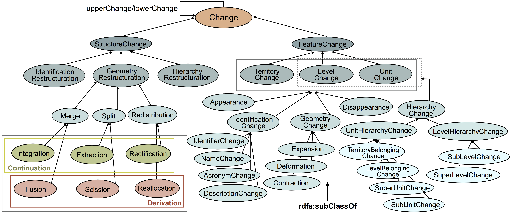
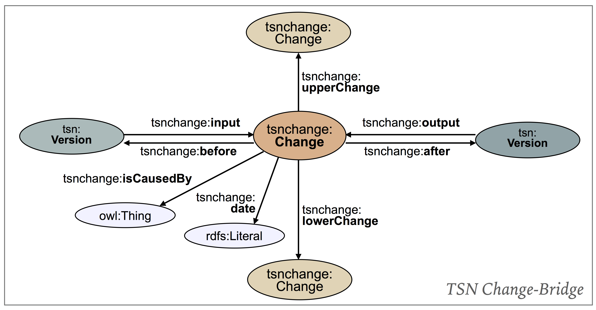

Prologue
Table of contents
Ontologies (1):
Territorial Statistical Nomenclature Change Ontology
Classes (42):
AcronymChange , Appearance , bfo:Occurrent , change:Change , Change , ContinuationChange , Contraction , Deformation , DerivationChange , DescriptionChange , Disappearance , Expansion , Extraction , FeatureChange , Fusion , GeometryChange , GeometryRestructuration , HierarchyChange , HierarchyRestructuration , IdentificationChange , IdentificationRestructuration , IdentifierChange , Integration , LevelBelongingChange , LevelChange , LevelHierarchyChange , Merge , NameChange , Reallocation , Rectification , Redistribution , Scission , Split , StructureChange , SubLevelChange , SubUnitChange , SuperLevelChange , SuperUnitChange , TerritoryBelongingChange , TerritoryChange , UnitChange , UnitHierarchyChange
Properties (28):
after , before , date , hasNextVersion , hasPreviousVersion , input , inputLevelVersion , inputNomenclatureVersion , inputTerritoryVersion , inputUnitVersion , isCausedBy , label , levelVersionAfter , levelVersionBefore , lowerChange , nomenclatureVersionAfter , nomenclatureVersionBefore , output , outputLevelVersion , outputNomenclatureVersion , outputTerritoryVersion , outputUnitVersion , pav:previousVersion , territoryVersionAfter , territoryVersionBefore , unitVersionAfter , unitVersionBefore , upperChange
Ontologies Outgoing Links:
Change Vocabulary , PAV , BFO , OWL-Time
Individuals (4):
individual695350491 , individual695350492 , individual695350532 , individual695350533
Abstract
We present in this document the TSN-Change Ontology ( Territorial Statistical Nomenclature Change Ontology ) to describe changes undergone by Territorial Statistical Nomenclatures, from one version to another.
Diagram of the ontology
TSN-Change main classes 
TSN-Change Change Bridge Structure - Description of Territorial changes, using the TSN and TSN-Change Ontotlogies 
Funding
This work was supported by the French region Auvergne-Rhône-Alpes [grant number REGION 2015-DRH-0367]. ARC7 : Innovations, mobilités, territoires et dynamiques urbaines.
Territorial Statistical Nomenclature Change Ontology (Ontology)
The TSN-Change ontology aims at describing changes that occured from one version of a Territorial Statistical Nomenclature (TSN) (i.e., partition of the territory) and its subsequent (e.g., change in territorial units boundaries to reflect an administrative reorganisation).
Version Control information
- Version
- 1.1
- Last modified
- Issued
- Creators
- Publishers
- License
- http://www.data.gouv.fr/Licence-Ouverte-Open-Licence
Definition
The URI of this ontology is http://purl.org/net/tsnchange#
| Preferred Namespace URI | |
| Preferred Prefix | |
Classes
AcronymChange , Appearance , bfo:Occurrent , change:Change , Change , ContinuationChange , Contraction , Deformation , DerivationChange , DescriptionChange , Disappearance , Expansion , Extraction , FeatureChange , Fusion , GeometryChange , GeometryRestructuration , HierarchyChange , HierarchyRestructuration , IdentificationChange , IdentificationRestructuration , IdentifierChange , Integration , LevelBelongingChange , LevelChange , LevelHierarchyChange , Merge , NameChange , Reallocation , Rectification , Redistribution , Scission , Split , StructureChange , SubLevelChange , SubUnitChange , SuperLevelChange , SuperUnitChange , TerritoryBelongingChange , TerritoryChange , UnitChange , UnitHierarchyChange
AcronymChange (OWL Class)
The acronym of a TSNFeature changes.
Definition
The URI of this class is http://purl.org/net/tsnchange#AcronymChange
| This class is a sub class of | IdentificationChange |
Appearance (OWL Class)
The Appearance concept describes the appearance (or creation) of a new TSNFeature (i.e., TerritoryVersion, LevelVersion or UnitVersion) as an output to the change event. "Appearance" means the identifier of the new TSNFeature is different from all that already exist, in the input and output NomenclatureVersion. This concept is equivalent to the "Appearance" concept of (Claramunt C, Thériault M. Managing Time in GIS An Event-Oriented Approach. In: Clifford J, Tuzhilin A, editors. Recent Advances in Temporal Databases. London: Springer London; 1995. p. 23–42. Available from: http://link.springer.com/10.1007/978-1-4471-3033-8_2).
Definition
The URI of this class is http://purl.org/net/tsnchange#Appearance
| This class is a sub class of | FeatureChange |
bfo:Occurrent (OWL Class)
An occurrent is an entity that unfolds itself in time or it is the instantaneous boundary of such an entity (for example a beginning or an ending) or it is a temporal or spatiotemporal region which such an entity occupies_temporal_region or occupies_spatiotemporal_region (SPAN) (Grenon and Smith definition).
| This class is a super class of | Version |
change:Change (OWL Class)
Change is a superclass of all different kinds of changes (source: Change Vocabulary Specification).
| This class is a super class of | Change |
Change (OWL Class)
The Change concept is the super class of all types of change that may occur from one TSN version to another. A Change node may group under one node several changes on TSNFeatures that make sense grouped together. As "a change is rarely isolated and independent from the other changes that occur simultaneously within the other units inside a given area", we have to link "together all the various units that were involved in a common territorial change" (Plumejeaud, C., Mathian, H., Gensel, J., Grasland, C. Spatio-temporal analysis of territorial changes from a multi-scale perspective. International Journal of Geographical Information Science. 25, 1597–1612 (2011)). The Change concept is based on the Change Bridge concept of (Kauppinen T, Hyvönen E. Modeling and reasoning about changes in ontology time series. In: Ontologies [Internet]. Springer; 2007. p. 319–338. Available from: http://link.springer.com/chapter/10.1007/978-0-387-37022-4_11): "A change bridge is associated with a change point and tells, what current concepts become obsolete (if any), what new concepts are created (if any), and how the new concepts overlap with older ones.".
Definition
The URI of this class is http://purl.org/net/tsnchange#Change
| This class is a sub class of | http://linkedearth.org/change/ns#Change |
| This class is a super class of | FeatureChange StructureChange |
In use
ContinuationChange (OWL Class)
The ContinuationChange concept describes restructuration operations that do not modify the identity of all the involved TSNFeatures that comes as input to the Change Operation.
Definition
The URI of this class is http://purl.org/net/tsnchange#ContinuationChange
| This class is a sub class of | GeometryRestructuration |
| This class is a super class of | Extraction Integration Rectification |
Contraction (OWL Class)
Contraction of a TSNFeature, in terms of shape, means its size decrease between the input NomenclatureVersion and the output NomenclatureVersion. This concept is equivalent to the "Contraction" concept of (Claramunt C, Thériault M. Managing Time in GIS An Event-Oriented Approach. In: Clifford J, Tuzhilin A, editors. Recent Advances in Temporal Databases. London: Springer London; 1995. p. 23–42. Available from: http://link.springer.com/10.1007/978-1-4471-3033-8_2).
Definition
The URI of this class is http://purl.org/net/tsnchange#Contraction
| This class is a sub class of | GeometryChange |
Deformation (OWL Class)
Deformation of a TSNFeature describes shape modification without size change between the input NomenclatureVersion and the output NomenclatureVersion. This concept is equivalent to the "Deformation" concept of (Claramunt C, Thériault M. Managing Time in GIS An Event-Oriented Approach. In: Clifford J, Tuzhilin A, editors. Recent Advances in Temporal Databases. London: Springer London; 1995. p. 23–42. Available from: http://link.springer.com/10.1007/978-1-4471-3033-8_2).
Definition
The URI of this class is http://purl.org/net/tsnchange#Deformation
| This class is a sub class of | GeometryChange |
DerivationChange (OWL Class)
The DerivationChange concept describes restructuration operations that do modify the identity of TSNFeatures that comes as input to the Change Operation.
Definition
The URI of this class is http://purl.org/net/tsnchange#DerivationChange
| This class is a sub class of | GeometryRestructuration |
| This class is a super class of | Fusion Reallocation Scission |
DescriptionChange (OWL Class)
The description of a TSNFeature changes.
Definition
The URI of this class is http://purl.org/net/tsnchange#DescriptionChange
| This class is a sub class of | IdentificationChange |
Disappearance (OWL Class)
The Disappearance concept describes the disappearance (or end) of a TSNFeature (i.e., TerritoryVersion, LevelVersion or UnitVersion) that comes as an input resource to the change event: the TSNFeature no longer exists after the change event i.e., no TSNFeature will carry its identifier in the output NomenclatureVersion. This concept is equivalent to the "Disappearance" concept of (Claramunt C, Thériault M. Managing Time in GIS An Event-Oriented Approach. In: Clifford J, Tuzhilin A, editors. Recent Advances in Temporal Databases. London: Springer London; 1995. p. 23–42. Available from: http://link.springer.com/10.1007/978-1-4471-3033-8_2).
Definition
The URI of this class is http://purl.org/net/tsnchange#Disappearance
| This class is a sub class of | FeatureChange |
Expansion (OWL Class)
Expansion of a TSNFeature, in terms of shape, means its size increase between the input NomenclatureVersion and the output NomenclatureVersion. This concept is equivalent to the "Expansion" concept of (Claramunt C, Thériault M. Managing Time in GIS An Event-Oriented Approach. In: Clifford J, Tuzhilin A, editors. Recent Advances in Temporal Databases. London: Springer London; 1995. p. 23–42. Available from: http://link.springer.com/10.1007/978-1-4471-3033-8_2).
Definition
The URI of this class is http://purl.org/net/tsnchange#Expansion
| This class is a sub class of | GeometryChange |
Extraction (OWL Class)
The Extraction concept describes the split of one TSNFeature (into two or more TSNFeatures) that nevertheless maintains its identity after the change event (i.e., its identifier is not modified). This operation leads to: (1) the Appearance of at least one new TSNFeature as an output of the change event: this/those new TSNFeature(s) take(s) territory from the input TSNFeature ; (2) the Contraction of the footprint of the input TSNFeature that nevertheless still exist after the change event. This concept is equivalent to the "Extraction" concept from the classification of territorial events of (Plumejeaud C, Mathian H, Gensel J, Grasland C. Spatio-temporal analysis of territorial changes from a multi-scale perspective. International Journal of Geographical Information Science. 2011;25(10):1597–1612).
Definition
The URI of this class is http://purl.org/net/tsnchange#Extraction
| This class is a sub class of | ContinuationChange Split |
FeatureChange (OWL Class)
The FeatureChange concept describes one or a set of changes that occur simultaneously and affect only one TSNFeature resource (i.e., TerritoryVersion, LevelVersion or UnitVersion). This concept is closed to the concept "Basic change" of (Claramunt C, Thériault M. Managing Time in GIS An Event-Oriented Approach. In: Clifford J, Tuzhilin A, editors. Recent Advances in Temporal Databases. London: Springer London; 1995. p. 23–42. Available from: http://link.springer.com/10.1007/978-1-4471-3033-8_2). And, this concept is equivalent to the "LifeEvent:Transformation" concept from the model of (Plumejeaud C, Mathian H, Gensel J, Grasland C. Spatio-temporal analysis of territorial changes from a multi-scale perspective. International Journal of Geographical Information Science. 2011;25(10):1597–1612).
Definition
The URI of this class is http://purl.org/net/tsnchange#FeatureChange
| This class is a sub class of | Change |
| This class is a super class of | Appearance Disappearance GeometryChange HierarchyChange IdentificationChange LevelChange TerritoryChange UnitChange |
Fusion (OWL Class)
The Fusion concept describes the merge of two or more TSNFeatures (e.g., merge of two TerritoryVersion or merge of two UnitVersion), into a single new TSNFeature that did not exist before the change. This operation leads to: (1) the disappearance of all the input TSNFeature(s) (i.e., the identity of the involved TSNFeatures is not extended after the Fusion); (2) the creation of one output TSNFeature whose footprint is equal to the combination of all the footprint of the input TSNFeatures. This concept is equivalent to the "Fusion" concept from the classification of territorial events of (Plumejeaud C, Mathian H, Gensel J, Grasland C. Spatio-temporal analysis of territorial changes from a multi-scale perspective. International Journal of Geographical Information Science. 2011;25(10):1597–1612).
Definition
The URI of this class is http://purl.org/net/tsnchange#Fusion
| This class is a sub class of | DerivationChange Merge |
GeometryChange (OWL Class)
The GeometryChange concept describes modification of the Geometry of one TSNFeature (i.e., TerritoryVersion, LevelVersion or UnitVersion). This concept is equivalent to the "Transformation" concept of (Claramunt C, Thériault M. Managing Time in GIS An Event-Oriented Approach. In: Clifford J, Tuzhilin A, editors. Recent Advances in Temporal Databases. London: Springer London; 1995. p. 23–42. Available from: http://link.springer.com/10.1007/978-1-4471-3033-8_2): "transformations processes involving chn-ange in shape or size: expansion, contraction and deformation (i.e. shape modification without size change)".
Definition
The URI of this class is http://purl.org/net/tsnchange#GeometryChange
| This class is a sub class of | FeatureChange |
| This class is a super class of | Contraction Deformation Expansion |
GeometryRestructuration (OWL Class)
The GeometryRestructuration concept is a sub concept of the StructureChange concept. It describes changes that simultaneously affect several TSNFeature by modifying their Geometry and sometime other attributs of the TSNFeatures. The set of TSNFeatures (TerritoryVersion, LevelVersion or UnitVersion) impacted by the GeometryRestructuration event is determined following the rule described by (Plumejeaud C, Mathian H, Gensel J, Grasland C. Spatio-temporal analysis of territorial changes from a multi-scale perspective. International Journal of Geographical Information Science. 25, 1597–1612 (2011)):"For any event type, a geometrical invariant defines the set of units involved in the one event: the combination of unit footprints that existed prior the event (preceding ones) is equal to the combination of unit footprints that are still in existence after the event (succeeding ones).". Except in case of GeometryRestructuration caused by a TerritoryChange that affect the external boundaries of the TerritoryVersion observed. Then, in this case, the set of TSNFeature (TerritoryVersion, LevelVersion or UnitVersion) impacted by the StructureChange event is determined following the rule: changes are grouped together if they occur simultaneously, inside a area which extends from the new territory boundaries to unit(s) boundaries that match the ones of unit(s) before the event. This concept is equivalent to the "evolution of spatial structure" notion from (Claramunt C, Thériault M. Managing Time in GIS An Event-Oriented Approach. In: Clifford J, Tuzhilin A, editors. Recent Advances in Temporal Databases. London: Springer London; 1995. p. 23–42. Available from: http://link.springer.com/10.1007/978-1-4471-3033-8_2).
Definition
The URI of this class is http://purl.org/net/tsnchange#GeometryRestructuration
| This class is a sub class of | StructureChange |
| This class is a super class of | ContinuationChange DerivationChange Merge Redistribution Split |
HierarchyChange (OWL Class)
The HierarchyChange concept describes modification of the position of one TSNFeature (LevelVersion or UnitVersion) in the NomenclatureVersion hierarchy. For example, a Unit may change the Level it belongs to.
Definition
The URI of this class is http://purl.org/net/tsnchange#HierarchyChange
| This class is a sub class of | FeatureChange |
| This class is a super class of | LevelHierarchyChange UnitHierarchyChange |
HierarchyRestructuration (OWL Class)
The HierarchyRestructuration concept is a sub concept of the StructureChange concept. It describes changes that simultaneously affect several TSNFeature by modifying the hierarchy of the TSN. Those changes make sense grouped together (e.g., if a new Level integrate the nomenclature as well as new Unit composing this Level, then all those Appearance event of TSNFeatures will be grouped under one HierarchyRestructuration node).
Definition
The URI of this class is http://purl.org/net/tsnchange#HierarchyRestructuration
| This class is a sub class of | StructureChange |
IdentificationChange (OWL Class)
The IdentificationChange concept describes change(s) that modify the identifier, name, acronym and/or description attributs of one TSNFeature.
Definition
The URI of this class is http://purl.org/net/tsnchange#IdentificationChange
| This class is a sub class of | FeatureChange |
| This class is a super class of | AcronymChange DescriptionChange IdentifierChange NameChange |
IdentificationRestructuration (OWL Class)
The IdentificationRestructuration concept is a sub concept of the StructureChange concept. It describes changes that simultaneously affect several TSNFeature by modifying their attributs of identification. Those changes make sense grouped together (e.g., all the sub-units of a Super one are renamed).
Definition
The URI of this class is http://purl.org/net/tsnchange#IdentificationRestructuration
| This class is a sub class of | StructureChange |
IdentifierChange (OWL Class)
The identifier (within the TSN) of a TSNFeature changes.
Definition
The URI of this class is http://purl.org/net/tsnchange#IdentifierChange
| This class is a sub class of | IdentificationChange |
Integration (OWL Class)
The Integration concept describes the merge of two or more TSNFeatures (e.g., merge of two TerritoryVersion or merge of two UnitVersion), into a single TSNFeature that existed before the change and maintains its identity after the change event (i.e., its identifier is not modified). This operation leads to: (1) the disappearance of at least one input TSNFeature ; (2) the Expansion of the footprint of the output TSNFeatures. Its new footprint is equal to the combination of all the footprint of the input TSNFeatures. This concept is equivalent to the "Integration" concept from the classification of territorial events of (Plumejeaud C, Mathian H, Gensel J, Grasland C. Spatio-temporal analysis of territorial changes from a multi-scale perspective. International Journal of Geographical Information Science. 2011;25(10):1597–1612).
Definition
The URI of this class is http://purl.org/net/tsnchange#Integration
| This class is a sub class of | ContinuationChange Merge |
LevelBelongingChange (OWL Class)
The level a Unit belongs to changes.
Definition
The URI of this class is http://purl.org/net/tsnchange#LevelBelongingChange
| This class is a sub class of | UnitHierarchyChange |
LevelChange (OWL Class)
The LevelChange concept describes all the changes undergone by a LevelVersion feature from one TSN version to another.
Definition
The URI of this class is http://purl.org/net/tsnchange#LevelChange
| This class is a sub class of | FeatureChange |
LevelHierarchyChange (OWL Class)
The LevelHierarchyChange concept describes changes that affect TSNFeatures that are of type LevelVersion. It describes changes of the Level position within the TSN hierarchy.
Definition
The URI of this class is http://purl.org/net/tsnchange#LevelHierarchyChange
| This class is a sub class of | HierarchyChange |
| This class is a super class of | http://purl.org/net/tsnchange#LowerLevelChange http://purl.org/net/tsnchange#UpperLevelChange SubLevelChange SuperLevelChange |
Merge (OWL Class)
The Merge concept describes the merge of two or more TSNFeatures (e.g., merge of two TerritoryVersion or merge of two UnitVersion), into a single TSNFeature. This concept is equivalent to the "Union" concept of (Claramunt C, Thériault M. Managing Time in GIS An Event-Oriented Approach. In: Clifford J, Tuzhilin A, editors. Recent Advances in Temporal Databases. London: Springer London; 1995. p. 23–42. Available from: http://link.springer.com/10.1007/978-1-4471-3033-8_2): "fusion of 'n' zones into a single entity (union)".
Definition
The URI of this class is http://purl.org/net/tsnchange#Merge
| This class is a sub class of | GeometryRestructuration |
| This class is a super class of | Fusion Integration |
NameChange (OWL Class)
The name of a TSNFeature changes.
Definition
The URI of this class is http://purl.org/net/tsnchange#NameChange
| This class is a sub class of | IdentificationChange |
Reallocation (OWL Class)
The Reallocation concept describes operations of redistribution of the spatial area that modify the identity of all the input TSNFeatures (i.e., their identifier is modified), and modify their Geometry. The combination of footprints of the input TSNFeatures is equal to the combination of footprints of the output TSNFeatures. This operation leads to: (1) the disappearance of all the 'n' input TSNFeatures ; (2) the creation of 'p' TSNFeatures as output to the change event by redistribution of the spatial area covered by the 'n' input TSNFeatures. This concept is equivalent to the "Reallocation" concept from the classification of territorial events of (Plumejeaud C, Mathian H, Gensel J, Grasland C. Spatio-temporal analysis of territorial changes from a multi-scale perspective. International Journal of Geographical Information Science. 2011;25(10):1597–1612).
Definition
The URI of this class is http://purl.org/net/tsnchange#Reallocation
| This class is a sub class of | DerivationChange Redistribution |
Rectification (OWL Class)
The Rectification concept describes operations of redistribution of the spatial area, without modifying the identity of all the input TSNFeatures (i.e., their identifier is not modified), but modifying their Geometry. The combination of footprints of the input TSNFeatures is equal to the combination of footprints of the output TSNFeatures. This concept is equivalent to the "Rectification" concept from the classification of territorial events of (Plumejeaud C, Mathian H, Gensel J, Grasland C. Spatio-temporal analysis of territorial changes from a multi-scale perspective. International Journal of Geographical Information Science. 2011;25(10):1597–1612).
Definition
The URI of this class is http://purl.org/net/tsnchange#Rectification
| This class is a sub class of | ContinuationChange Redistribution |
Redistribution (OWL Class)
The Redistribution concept describes operations of redistribution of the spatial area covered by 'n' TSNFeature(s) in the input NomenclatureVersion to form 'p' TSNFeature(s) in the output NomenclatureVersion. This concept is equivalent to the "Re-allocation" concept of (Claramunt C, Thériault M. Managing Time in GIS An Event-Oriented Approach. In: Clifford J, Tuzhilin A, editors. Recent Advances in Temporal Databases. London: Springer London; 1995. p. 23–42. Available from: http://link.springer.com/10.1007/978-1-4471-3033-8_2): "reallocation of land covered by 'n' initial zones to form 'p' new zones ".
Definition
The URI of this class is http://purl.org/net/tsnchange#Redistribution
| This class is a sub class of | GeometryRestructuration |
| This class is a super class of | Reallocation Rectification |
Scission (OWL Class)
The Scission concept describes the split of one TSNFeature (into two or more TSNFeatures) that ceases to exist after the change event. This operation leads to: (1) the disappearance of the input TSNFeature (i.e., the identity of this TSNFeature is not extended after the event i.e., at least the identifier of the TSNFeature is modified); (2) the creation of two or more Units in the NomenclatureVersion V+1 by split of the footprint of the input Unit in NomenclatureVersion V. This concept is equivalent to the "Scission" concept from the classification of territorial events of (Plumejeaud C, Mathian H, Gensel J, Grasland C. Spatio-temporal analysis of territorial changes from a multi-scale perspective. International Journal of Geographical Information Science. 2011;25(10):1597–1612).
Definition
The URI of this class is http://purl.org/net/tsnchange#Scission
| This class is a sub class of | DerivationChange Split |
Split (OWL Class)
The Split concept describes the split of a TSNFeature, into two or more TSNFeature. This concept is equivalent to the "Split" concept of (Claramunt C, Thériault M. Managing Time in GIS An Event-Oriented Approach. In: Clifford J, Tuzhilin A, editors. Recent Advances in Temporal Databases. London: Springer London; 1995. p. 23–42. Available from: http://link.springer.com/10.1007/978-1-4471-3033-8_2): "division of a zone into 'n' parts (split)".
Definition
The URI of this class is http://purl.org/net/tsnchange#Split
| This class is a sub class of | GeometryRestructuration |
| This class is a super class of | Extraction Scission |
StructureChange (OWL Class)
The StructureChange concept describes restructuration operations that impact the TSN and several of its features simultaneously.
Definition
The URI of this class is http://purl.org/net/tsnchange#StructureChange
| This class is a sub class of | Change |
| This class is a super class of | GeometryRestructuration HierarchyRestructuration IdentificationRestructuration |
SubLevelChange (OWL Class)
The Sub level of a level changes.
Definition
The URI of this class is http://purl.org/net/tsnchange#SubLevelChange
| This class is a sub class of | LevelHierarchyChange |
| This class is an equivalent class of | http://purl.org/net/tsnchange#LowerLevelChange |
SubUnitChange (OWL Class)
The Sub Unit(s) of a Unit change(s) i.e., whatever the nature of the change of the Sub Unit(s).
Definition
The URI of this class is http://purl.org/net/tsnchange#SubUnitChange
| This class is a sub class of | UnitHierarchyChange |
SuperLevelChange (OWL Class)
The Super level of a level changes.
Definition
The URI of this class is http://purl.org/net/tsnchange#SuperLevelChange
| This class is a sub class of | LevelHierarchyChange |
| This class is an equivalent class of | http://purl.org/net/tsnchange#UpperLevelChange |
SuperUnitChange (OWL Class)
The Super Unit of a Unit changes i.e., the Identifier of the Super Unit is not the same between the input and output NomenclatureVersion.
Definition
The URI of this class is http://purl.org/net/tsnchange#SuperUnitChange
| This class is a sub class of | UnitHierarchyChange |
TerritoryBelongingChange (OWL Class)
The Territory a Unit belongs to changes.
Definition
The URI of this class is http://purl.org/net/tsnchange#TerritoryBelongingChange
| This class is a sub class of | UnitHierarchyChange |
TerritoryChange (OWL Class)
The TerritoryChange concept describes all the changes undergone by a TerritoryVersion feature from one TSN version to another.
Definition
The URI of this class is http://purl.org/net/tsnchange#TerritoryChange
| This class is a sub class of | FeatureChange |
UnitChange (OWL Class)
The UnitChange concept describes all the changes undergone by a UnitVersion feature from one TSN version to another.
Definition
The URI of this class is http://purl.org/net/tsnchange#UnitChange
| This class is a sub class of | FeatureChange |
UnitHierarchyChange (OWL Class)
The UnitHierarchyChange concept describes changes that affect TSNFeatures that are of type UnitVersion. It describes changes of the Unit position within the TSN hierarchy (e.g., change in the level it belongs to and/or Super unit change).
Definition
The URI of this class is http://purl.org/net/tsnchange#UnitHierarchyChange
| This class is a sub class of | HierarchyChange |
| This class is a super class of | LevelBelongingChange SubUnitChange SuperUnitChange TerritoryBelongingChange |
Properties
after , before , date , hasNextVersion , hasPreviousVersion , input , inputLevelVersion , inputNomenclatureVersion , inputTerritoryVersion , inputUnitVersion , isCausedBy , label , levelVersionAfter , levelVersionBefore , lowerChange , nomenclatureVersionAfter , nomenclatureVersionBefore , output , outputLevelVersion , outputNomenclatureVersion , outputTerritoryVersion , outputUnitVersion , pav:previousVersion , territoryVersionAfter , territoryVersionBefore , unitVersionAfter , unitVersionBefore , upperChange
after (Property)
Indicates a TSNComponent after a change event.
Definition
The URI of this property is http://purl.org/net/tsnchange#after
| This property is a inverse property of | output |
| The domain of this property is | Change |
| The range of this property is | http://purl.org/net/tsn#TSNComponent |
| This property is a super property of | levelVersionAfter nomenclatureVersionAfter territoryVersionAfter unitVersionAfter |
before (Property)
Indicates a TSNComponent before a change event.
Definition
The URI of this property is http://purl.org/net/tsnchange#before
| This property is a inverse property of | input |
| The domain of this property is | Change |
| The range of this property is | http://purl.org/net/tsn#TSNComponent |
| This property is a super property of | levelVersionBefore nomenclatureVersionBefore territoryVersionBefore unitVersionBefore |
date (Property)
Assign a date to the change that occurred.
Definition
The URI of this property is http://purl.org/net/tsnchange#date
| The domain of this property is | Change |
| The range of this property is | rdfs:Literal |
| This property is a equivalent property of | dcterm:date |
hasNextVersion (Property)
Indicates the next Version of a Version resource, in a TSN lineage.
Definition
The URI of this property is http://purl.org/net/tsnchange#hasNextVersion
| This property is a inverse property of | hasPreviousVersion |
| The domain of this property is | http://purl.org/net/tsn#Version |
| The range of this property is | http://purl.org/net/tsn#Version |
hasPreviousVersion (Property)
Indicates the previous Version of a Version resource, in a TSN lineage.
Definition
The URI of this property is http://purl.org/net/tsnchange#hasPreviousVersion
| This property is a inverse property of | hasNextVersion |
| The domain of this property is | http://purl.org/net/tsn#Version |
| The range of this property is | http://purl.org/net/tsn#Version |
| This property is a sub property of | pav:previousVersion |
input (Property)
Indicates a Change resource of which a TSNComponent is an input resource (i.e., an object subject to change).
Definition
The URI of this property is http://purl.org/net/tsnchange#input
| This property is a inverse property of | before |
| The domain of this property is | http://purl.org/net/tsn#TSNComponent |
| The range of this property is | Change |
| This property is a super property of | inputLevelVersion inputNomenclatureVersion inputTerritoryVersion inputUnitVersion |
inputLevelVersion (Property)
Indicates a Change of which a LevelVersion is an input resource.
Definition
The URI of this property is http://purl.org/net/tsnchange#inputLevelVersion
| This property is a inverse property of | levelVersionBefore |
| The domain of this property is | http://purl.org/net/tsn#Level |
| The range of this property is | Change |
| This property is a sub property of | input |
inputNomenclatureVersion (Property)
Indicates a Change of which a NomenclatureVersion is an input resource.
Definition
The URI of this property is http://purl.org/net/tsnchange#inputNomenclatureVersion
| This property is a inverse property of | nomenclatureVersionBefore |
| The domain of this property is | http://purl.org/net/tsn#NomenclatureVersion |
| The range of this property is | Change |
| This property is a sub property of | input |
inputTerritoryVersion (Property)
Indicates a Change of which a TerritoryVersion is an input resource.
Definition
The URI of this property is http://purl.org/net/tsnchange#inputTerritoryVersion
| This property is a inverse property of | territoryVersionBefore |
| The domain of this property is | http://purl.org/net/tsn#TerritoryVersion |
| The range of this property is | Change |
| This property is a sub property of | input |
inputUnitVersion (Property)
Indicates a Change of which a UnitVersion is an input resource.
Definition
The URI of this property is http://purl.org/net/tsnchange#inputUnitVersion
| This property is a inverse property of | unitVersionBefore |
| The domain of this property is | http://purl.org/net/tsn#Unit |
| The range of this property is | Change |
| This property is a sub property of | input |
label (Property)
Assign a name to the change that occurred.
Definition
The URI of this property is http://purl.org/net/tsnchange#label
| The domain of this property is | Change |
| The range of this property is | rdfs:Literal |
levelVersionAfter (Property)
Indicates a LevelVersion after a change event.
Definition
The URI of this property is http://purl.org/net/tsnchange#levelVersionAfter
| This property is a inverse property of | outputLevelVersion |
| The domain of this property is | Change |
| The range of this property is | http://purl.org/net/tsn#LevelVersion |
| This property is a sub property of | after |
levelVersionBefore (Property)
Indicates a Level before a change event.
Definition
The URI of this property is http://purl.org/net/tsnchange#levelVersionBefore
| This property is a inverse property of | inputLevelVersion |
| The domain of this property is | Change |
| The range of this property is | http://purl.org/net/tsn#LevelVersion |
| This property is a sub property of | before |
nomenclatureVersionAfter (Property)
Indicates a NomenclatureVersion after a change event.
Definition
The URI of this property is http://purl.org/net/tsnchange#nomenclatureVersionAfter
| This property is a inverse property of | outputNomenclatureVersion |
| The domain of this property is | Change |
| The range of this property is | http://purl.org/net/tsn#NomenclatureVersion |
| This property is a sub property of | after |
nomenclatureVersionBefore (Property)
Indicates a NomenclatureVersion before a change event.
Definition
The URI of this property is http://purl.org/net/tsnchange#nomenclatureVersionBefore
| This property is a inverse property of | inputNomenclatureVersion |
| The domain of this property is | Change |
| The range of this property is | http://purl.org/net/tsn#NomenclatureVersion |
| This property is a sub property of | before |
output (Property)
Indicates a Change resource of which a TSNComponent is an output resource (i.e., a result of the Change event).
Definition
The URI of this property is http://purl.org/net/tsnchange#output
| This property is a inverse property of | after |
| The domain of this property is | http://purl.org/net/tsn#TSNComponent |
| The range of this property is | Change |
| This property is a super property of | outputLevelVersion outputNomenclatureVersion outputTerritoryVersion outputUnitVersion |
outputLevelVersion (Property)
Indicates a Change of which a LevelVersion is an output resource.
Definition
The URI of this property is http://purl.org/net/tsnchange#outputLevelVersion
| This property is a inverse property of | levelVersionAfter |
| The domain of this property is | http://purl.org/net/tsn#Level |
| The range of this property is | Change |
| This property is a sub property of | output |
outputNomenclatureVersion (Property)
Indicates a Change of which a NomenclatureVersion is an output resource.
Definition
The URI of this property is http://purl.org/net/tsnchange#outputNomenclatureVersion
| This property is a inverse property of | nomenclatureVersionAfter |
| The domain of this property is | http://purl.org/net/tsn#NomenclatureVersion |
| The range of this property is | Change |
| This property is a sub property of | output |
outputTerritoryVersion (Property)
Indicates a Change of which a TerritoryVersion is an output resource.
Definition
The URI of this property is http://purl.org/net/tsnchange#outputTerritoryVersion
| This property is a inverse property of | territoryVersionAfter |
| The domain of this property is | http://purl.org/net/tsn#TerritoryVersion |
| The range of this property is | Change |
| This property is a sub property of | output |
outputUnitVersion (Property)
Indicates a Change of which a UnitVersion is an output resource.
Definition
The URI of this property is http://purl.org/net/tsnchange#outputUnitVersion
| This property is a inverse property of | unitVersionAfter |
| The domain of this property is | http://purl.org/net/tsn#Unit |
| The range of this property is | Change |
| This property is a sub property of | output |
pav:previousVersion (Property)
The previous version of a resource in a lineage. For instance a news article updated to correct factual information would point to the previous version of the article with pav:previousVersion. If however the content has significantly changed so that the two resources no longer share lineage (say a new article that talks about the same facts), they can instead be related using pav:derivedFrom. This property is normally used in a functional way, although PAV does not formally restrict this. Earlier versions which are not direct ancestors of this resource may instead be provided using the superproperty pav:hasEarlierVersion. A version number of this resource can be provided using the data property pav:version. To indicate that this version is a snapshot of a more general, non-versioned resource, e.g. 'Weather Today' vs. 'Weather Today on 2013-12-07', see pav:hasVersion. Note that it might be confusing to indicate pav:previousVersion from a resource that also has pav:hasVersion or pav:hasCurrentVersion relations, as such resources are intended to be a long-living and 'unversioned', while pav:previousVersion is intended for use between permalink-like 'snapshots' arranged in a linear history.
Definition
The URI of this property is http://purl.org/pav/previousVersion
| This property is a super property of | hasPreviousVersion |
In use
This property is defined by http://purl.org/pav/
territoryVersionAfter (Property)
Indicates a TerritoryVersion after a change event.
Definition
The URI of this property is http://purl.org/net/tsnchange#territoryVersionAfter
| This property is a inverse property of | outputTerritoryVersion |
| The domain of this property is | Change |
| The range of this property is | http://purl.org/net/tsn#TerritoryVersion |
| This property is a sub property of | after |
territoryVersionBefore (Property)
Indicates a TerritoryVersion before a change event.
Definition
The URI of this property is http://purl.org/net/tsnchange#territoryVersionBefore
| This property is a inverse property of | inputTerritoryVersion |
| The domain of this property is | Change |
| The range of this property is | http://purl.org/net/tsn#TerritoryVersion |
| This property is a sub property of | before |
unitVersionAfter (Property)
Indicates a UnitVersion after a change event.
Definition
The URI of this property is http://purl.org/net/tsnchange#unitVersionAfter
| This property is a inverse property of | outputUnitVersion |
| The domain of this property is | Change |
| The range of this property is | http://purl.org/net/tsn#UnitVersion |
| This property is a sub property of | after |
unitVersionBefore (Property)
Indicates a UnitVersion before a change event.
Definition
The URI of this property is http://purl.org/net/tsnchange#unitVersionBefore
| This property is a inverse property of | inputUnitVersion |
| The domain of this property is | Change |
| The range of this property is | http://purl.org/net/tsn#UnitVersion |
| This property is a sub property of | before |
Individuals
individual695350491 , individual695350492 , individual695350532 , individual695350533
individual695350491 (Individual)
{{No description available}} 
individual695350492 (Individual)
{{No description available}} 
individual695350532 (Individual)
{{No description available}} 
individual695350533 (Individual)
{{No description available}} 
Glossary
- AcronymChange
- AcronymChange
- Appearance
- Appearance
- Change
- Change
- ContinuationChange
- ContinuationChange
- Contraction
- Contraction
- Deformation
- Deformation
- DerivationChange
- DerivationChange
- DescriptionChange
- DescriptionChange
- Disappearance
- Disappearance
- Expansion
- Expansion
- Extraction
- Extraction
- FeatureChange
- FeatureChange
- Fusion
- Fusion
- GeometryChange
- GeometryChange
- GeometryRestructuration
- GeometryRestructuration
- HierarchyChange
- HierarchyChange
- HierarchyRestructuration
- HierarchyRestructuration
- IdentificationChange
- IdentificationChange
- IdentificationRestructuration
- IdentificationRestructuration
- IdentifierChange
- IdentifierChange
- Integration
- Integration
- LevelBelongingChange
- LevelBelongingChange
- LevelChange
- LevelChange
- LevelHierarchyChange
- LevelHierarchyChange
- Merge
- Merge
- NameChange
- NameChange
- Reallocation
- Reallocation
- Rectification
- Rectification
- Redistribution
- Redistribution
- Scission
- Scission
- Split
- Split
- StructureChange
- StructureChange
- SubLevelChange
- SubLevelChange
- SubUnitChange
- SubUnitChange
- SuperLevelChange
- SuperLevelChange
- SuperUnitChange
- SuperUnitChange
- Territorial Statistical Nomenclature Change Ontology
- Territorial Statistical Nomenclature Change Ontology
- TerritoryBelongingChange
- TerritoryBelongingChange
- TerritoryChange
- TerritoryChange
- UnitChange
- UnitChange
- UnitHierarchyChange
- UnitHierarchyChange
- after
- after
- before
- before
- date
- date
- hasNextVersion
- hasNextVersion
- hasPreviousVersion
- hasPreviousVersion
- input
- input
- inputLevelVersion
- inputLevelVersion
- inputNomenclatureVersion
- inputNomenclatureVersion
- inputTerritoryVersion
- inputTerritoryVersion
- inputUnitVersion
- inputUnitVersion
- isCausedBy
- isCausedBy
- label
- label
- levelVersionAfter
- levelVersionAfter
- levelVersionBefore
- levelVersionBefore
- lowerChange
- lowerChange
- nomenclatureVersionAfter
- nomenclatureVersionAfter
- nomenclatureVersionBefore
- nomenclatureVersionBefore
- output
- output
- outputLevelVersion
- outputLevelVersion
- outputNomenclatureVersion
- outputNomenclatureVersion
- outputTerritoryVersion
- outputTerritoryVersion
- outputUnitVersion
- outputUnitVersion
- pav:previousVersion
- pav:previousVersion
- territoryVersionAfter
- territoryVersionAfter
- territoryVersionBefore
- territoryVersionBefore
- unitVersionAfter
- unitVersionAfter
- unitVersionBefore
- unitVersionBefore
- upperChange
- upperChange
 Go to top
Go to top Expand/Collapse all
Expand/Collapse all Back to form
Back to form Help
Help